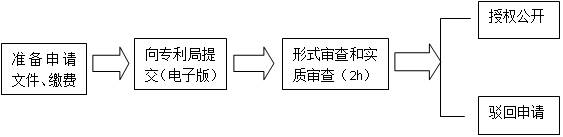

1. 下载申请表格，准备相关文件，主要是专利申请表
2. 向XLP专利局[1]提交一份电子版，缴纳申请费用 XXX元/件先申请原则：电子版文件通过XLP专利局平台提交，实行先申请原则，即两个申请人就相同的技术方案向XLP专利局提出申请的，由最先提交申请文件的任务方获得，而不论发明完成的先后，提交申请文件的时间以收到申请的时间为准；先用权人，是指在专利权人之后、专利技术授权公开之前提交相同技术方案申请的小组，或指专利技术公开后10分钟内提交电子版申请并有证据证明系独立开发的任务方。先用权人有权继续使用专利技术，不构成侵权。
3. XLP专利局对申请进行在2小时内的形式和实质审查，对符合申请条件的技术方案，当场授予专利权，颁发专利证书；
4. 由XLP专利局在平台上公开授权技术方案的全部内容；
5. 在XLP专利局作出授予专利或者驳回申请的决定之前，申请人可以口头申请撤回专利申请或者将其转变为开源。
开源程序（以CC 的形式无偿公开）
开源人享有无偿使用在开源技术基础上改进的技术方案，无论改进技术的小组是否申请了专利。若开源人选择了CC协议中“以相同方式共享”的方式，则在开源技术基础上改进的技术也必须以开源的方式公开。
[1] XLP专利局专利审查工作由法院法官及技术顾问
[2] CC协议的使用请参见XLP版权与知识共享规则，并请注意：CC协议只限制他人使用该文本的权利，版权不保护创意，因此一旦选择技术开源，他人对技术和创意本身的使用是不受任何限制的。
交易程序 1.双方通过自由协商拟定技术转让或许可使用合同； 2.双方向专利局提交已签字的合同（电子版）进行备案。
纠纷处理程序